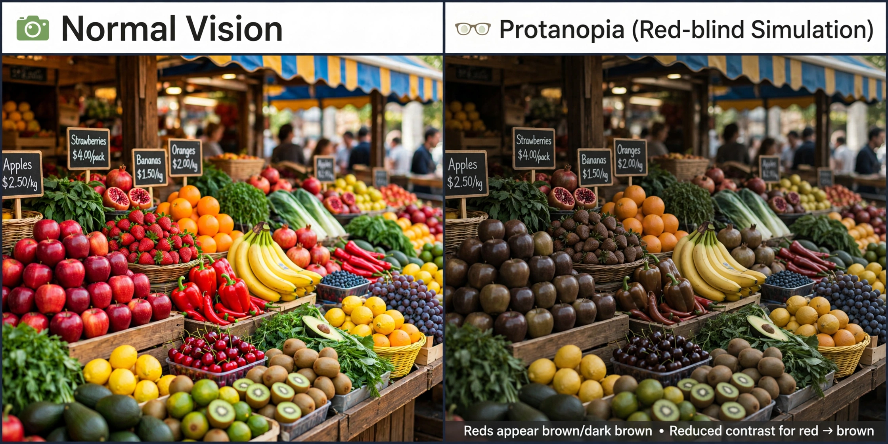

| Protanopia | |
|---|---|
 | |
| Type | Red–green colour vision deficiency, dichromacy |
| Cause | Absence of functional L-cones (red photoreceptors) |
| Inheritance | X-linked recessive (OPN1LW gene) |
| Prevalence | ~1% of males, ~0.02% of females |
Protanopia is a form of colour blindness in which the retina lacks functional long-wavelength-sensitive cones (L-cones, the "red" photoreceptors). It is a dichromatic, X-linked recessive condition: affected individuals have two working cone types instead of three, and confuse colours along the red–green axis, with red appearing markedly darkened — often nearly black — because the eye's long-wavelength sensitivity is shifted toward shorter wavelengths.
Protanopes confuse red, orange, yellow and green hues of similar brightness, and mistake red for dark grey or black. Pure red light appears very dim, since the missing L-cone normally provides much of the luminosity response at long wavelengths. Blue–green versus grey confusions also occur. The related condition protanomaly, in which the L-cone pigment is present but shifted in sensitivity, produces a milder deficiency.
Protanopia results from deletion or dysfunction of the OPN1LW opsin gene on the X chromosome (Xq28), which encodes the red cone photopigment. Because the gene array for the red and green opsins lies on the X chromosome and the traits are recessive, the condition is far more common in males (about 1.3% have a protan defect of some degree, roughly 1% being protanopes) than in females.
Protanopia is detected with pseudoisochromatic plate tests such as the Ishihara test used in a vision test, and distinguished from deuteranopia by anomaloscopy, which measures the observer's red–green mixture matches: protanopes require much more red in the mixture and see red as abnormally dark.
Protanopia affects tasks relying on red signals — traffic lights are still distinguishable by position — and some occupations restrict entry for dichromats. Digital simulations and colour-vision-deficiency filters can render images as a protanope would see them, aiding accessible design.
See also: Deuteranopia · Shinobu Ishihara · Vision test · Colour blindness